今天是２０１０年的最後一天！日子過的真快，又是一年的尾聲！
今天是２０１０年的最後一天！日子過的真快，又是一年的尾聲！
今年跨年決定帶卡卡出國坐飛機，一起迎接民國１００年！
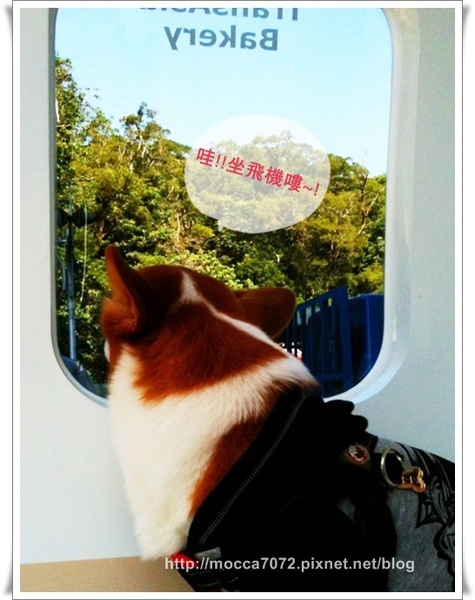
前往香港的登機門！？
哈哈哈哈!!其實是我們深坑又有新店注入嘍!
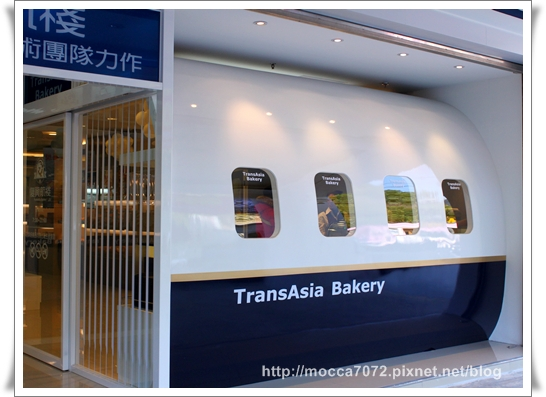
傻眼了！深坑居然開了間復興航棧，不懂它為什麼挑在這兒開！XDDD
而且本年度最後一篇文章居然是以麵包店做Ending....噗！哈哈哈～
因為最後一天打算帶剛睡醒的摩卡卡悠哉的吃早餐咩！
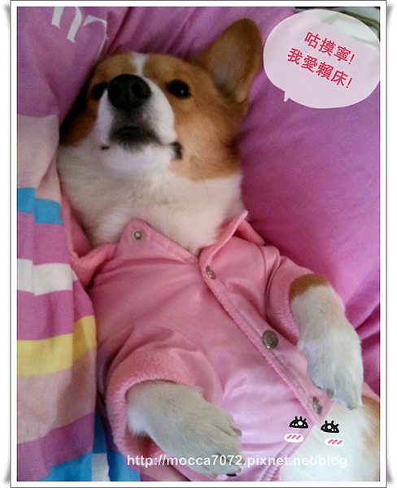
店面用可愛的機艙門裝飾，藍白配顏色好可愛！
整體看起來乾乾淨淨，也很明亮舒服！
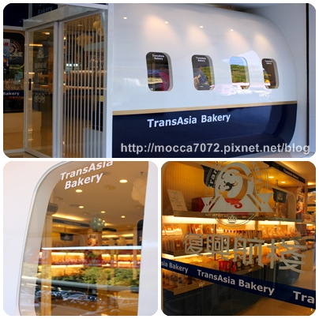
號稱麵包超人的猛哥一整個忍不住馬上開始挑選！
這傢伙非常之愛吃麵包、蛋糕這玩意兒～
我對這些的戰鬥力就非常的弱啊！
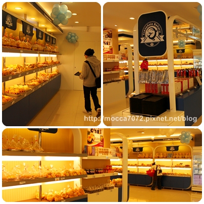
柔和的黃光讓麵包同學看起來更美味惹！？
左下的歐克麵包據說是人氣商品第一名，超大一個！
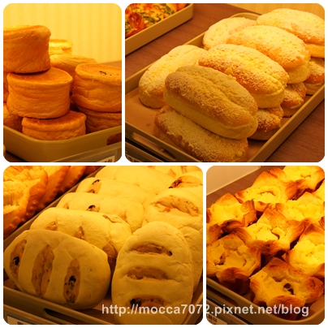
當然店內是不能帶狗狗進去的啦！免得害的大家吃的一嘴毛！
所以讓卡卡在外頭等一下！
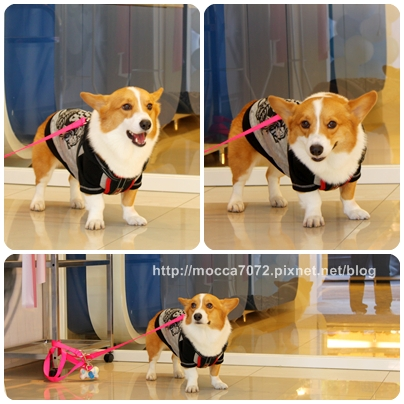
挑完可口的麵包，可以到旁邊的戶外區用餐！
今天天氣超好的，雖然很冷但還是有溫暖的冬陽可以曬！超舒服的
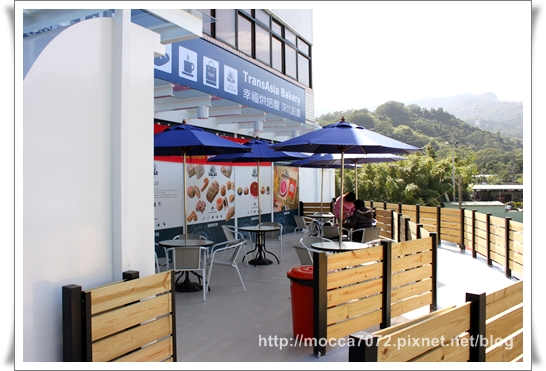
摩卡卡代言的摩卡咖啡看板！
哈哈哈～用唉鳯拍的！效果意外的好，很有fu的一張照片~
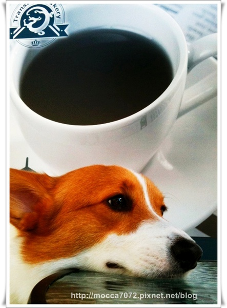
喝完保證繼續打瞌睡!? ㄎㄎㄎ 
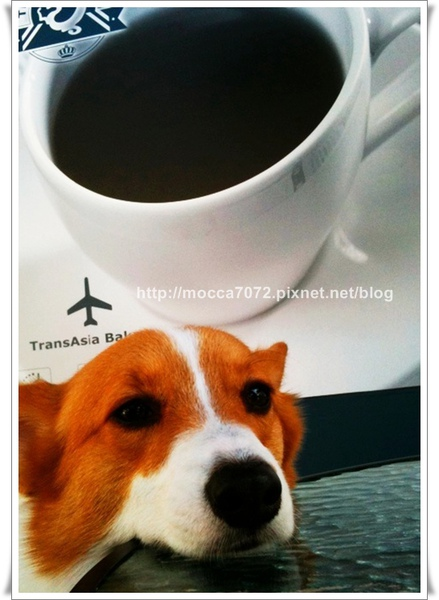
2010年帶著卡卡征戰了許多地方，也認識更多的朋友！
很謝謝大家這一年的陪伴，希望大家新的一年可以更加的順利！
今天要帶卡卡衝１０１看煙火，明天再去升旗！？哈哈哈
人生難得可以遇到１００年，一起熱血一下吧！！！
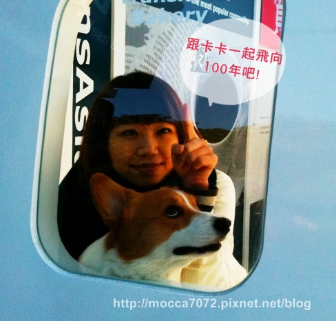
2010的最後一天，摩卡卡家要先預祝各位捧油
新年快樂~~ HAPPY NEW YEAR ~~
一起飛向２０１１吧～～～～ＧＯ
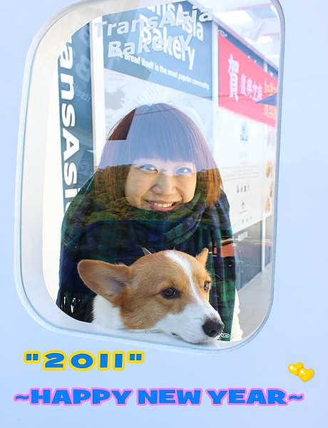